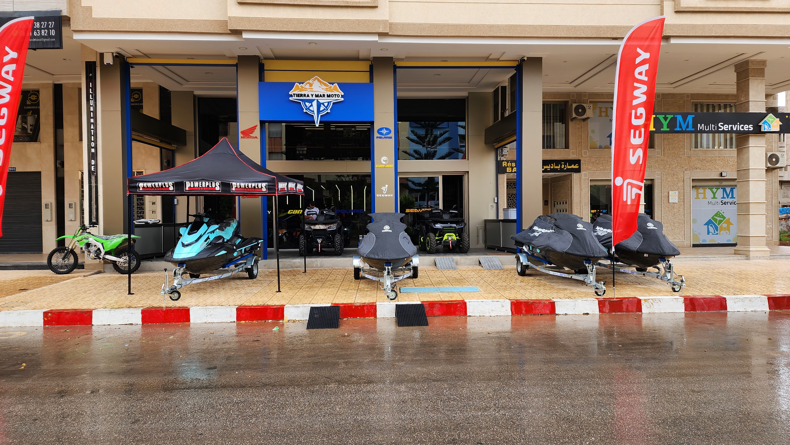

L'aventure sans limites sur Terre & Mer. Quads, Motos, Buggies Can-Am & Jet-Skis Sea-Doo à Nador.
100%
Sécurité & Guide
Can-Am
& Sea-Doo Officiels
7j/7
Ouvert Toute l'Année
5★
Satisfaction Clients
Idéalement situé au Quartier Al Matar, Avenue 30 à Nador, Tierra Y Mar Moto est votre centre privilégié pour la location, l'achat et les excursions guidées en Quads, Motos, Buggies Can-Am et Jet-Skis Sea-Doo.
Nos guides professionnels vous font découvrir les paysages exceptionnels de la région : Mont Gurugu, Cap de l'Eau, lagune de Marchica et expéditions jusqu'au désert de Merzouga.
Adresse du Showroom
Quartier Al Matar, Avenue 30, Nador, Maroc
Horaires d'Ouverture
Lundi - Dimanche : 08:30 - 20:00 (7j/7)
Des itinéraires guidés uniques créés pour les passionnés d'aventure, de nature et de sensations fortes.
Des questions concernant la vente, la location longue durée ou la réservation d'un groupe pour une excursion ? Contactez directement notre équipe à Nador.
Quartier Al Matar, Avenue 30, Nador, Maroc
Quartier Al Matar, Avenue 30, Nador. Accès facile pour l'embarquement des quads et le départ des circuits.
Ouvrir sur Google Maps